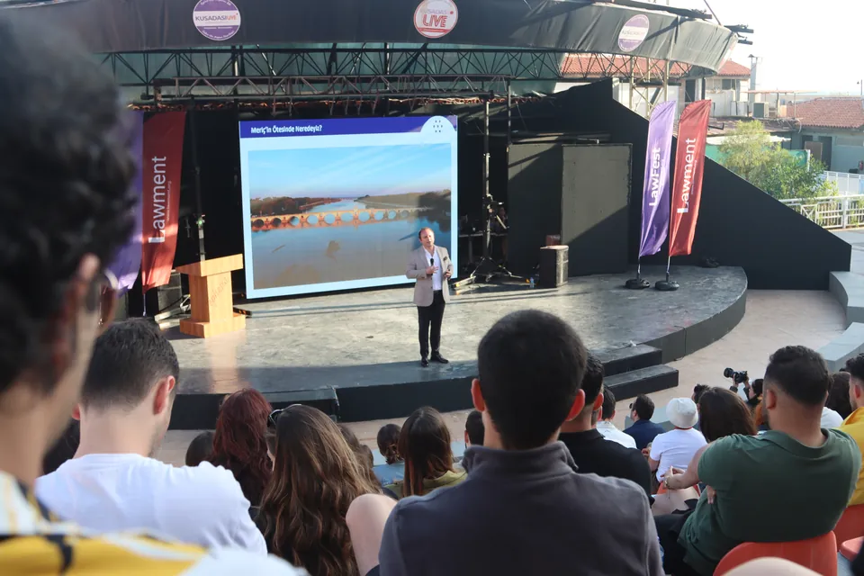
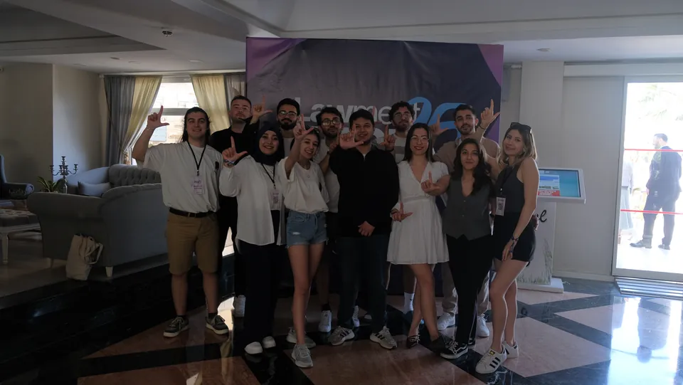

Biz kimiz · 2023, İzmir
Bir fikirle başladık, bugün farklı şehirlerden ve deneyimlerden hukukçuları aynı çatı altında buluşturan bir derneğe dönüştük.
- Kuruluş
- 2023
- Gönüllü
- 41
- Departman
- 5

İzmir'den
Türkiye'ye

01 / Hikâyemiz
2023'te İzmir'de başlayan bir yolculuk.
Lawment'i, hukuk alanında yeni fikirlerin ortaya çıkabileceği ve gençlerin kendi projelerini hayata geçirebileceği bir alan oluşturma düşüncesiyle kurduk. Cumhuriyetimizin 100. yılında düzenlediğimiz Yeni Yüzyılın Hukuku etkinliğiyle başlayan yolculuğumuz, zaman içinde farklı projeler, organizasyonlar ve çalışma alanlarıyla büyüdü.
Bugün Lawment Fest, Comparena, Back in Lawment ve diğer çalışmalarımızla ilk günkü heyecanımızı koruyarak faaliyetlerimizi sürdürüyoruz. İzmir'de doğan bu yapı, Türkiye'nin farklı şehirlerinden üyelerin katkısıyla gelişmeye devam ediyor.
Misyonumuz
Genç hukukçuların akademik ve mesleki gelişimlerine katkı sunmak, hukuk eğitimini uygulamayla destekleyen çalışmalar geliştirmek ve farklı hukuk alanlarında bilgi ve deneyim paylaşımına imkân tanımak.
Vizyonumuz
Hukuk alanında henüz yeterince ele alınmamış konulara ve farklı proje fikirlerine alan açarak yenilikçi çalışmaların öncüsü olmak; güçlü iş birlikleriyle genişleyen bir hukuk ağı oluşturmak.
02 / Değerlerimiz
Düşün. Bağ kur. Üret.
- 01
Düşün.
Sorular sor, farklı alanları bir araya getir ve ezberlerin ötesine geç.
- 02
Bağ kur.
Öğrenci, akademisyen ve profesyoneller arasında kalıcı ilişkiler geliştir.
- 03
Üret.
Bilgiyi topluma dokunan projelere ve gerçek deneyimlere dönüştür.
03 / Yapımız
İki kurul, beş departman
Yönetim Kurulu derneğin yönünü belirliyor, Yürütme Kurulu günlük işi koordine ediyor. 41 gönüllümüz beş departmanda çalışıyor; her etkinlik departmanların ortak işi.
Yönetim Kurulu · 6 kişi
Derneğin yönü ve temsili
Başkan: Av. Kerimcan Demir
Yürütme Kurulu · 8 kişi
Günlük işleyiş ve koordinasyon
Başkan: Özlem Sultan Hatip
Kurumsal İlişkiler
Şirketler, hukuk büroları ve kurumlarla iş birliklerini ve sponsorlukları yürütür.
Üye Gelişim
Yeni üyelerin derneğe katılımını, eğitimlerini ve gelişim programlarını planlar.
Proje ve İnovasyon
Yeni etkinlik formatlarını ve projeleri tasarlar, hayata geçirir.
Dijital İletişim
Sosyal medya, web sitesi ve tanıtım içeriklerini üretir.
Yasallık ve Finans
Derneğin mevzuata uygun işleyişini, bütçesini ve resmî süreçlerini takip eder.
04 / Ekibimiz
Lawment'i yürütenler.
Derneği Yönetim Kurulu ve Yürütme Kurulu yönetiyor; beş departmandaki ekiplerimiz etkinlikleri birlikte kuruyor.
Yönetim Kurulu
Derneğin yönünü belirler ve dernek adına temsil eder.
- Yönetim Kurulu BaşkanıAv. Kerimcan DemirDijital İletişim
- Yönetim Kurulu ÜyesiAv. İrem TürkoğluKurumsal İlişkiler
- Yönetim Kurulu ÜyesiAv. Ömer Faruk KılıçKurumsal İlişkiler
- Yönetim Kurulu ÜyesiAv. Zeynep Sude AkıllıProje ve İnovasyon
- Yönetim Kurulu ÜyesiAv. Ezgi ÇamcaYasallık ve Finans
- Yönetim Kurulu ÜyesiDilan BeğtaşÜye Gelişim
Yürütme Kurulu
Departmanlar arasındaki işi planlar, koordine eder ve takip eder.
- Yürütme Kurulu BaşkanıÖzlem Sultan HatipKurumsal İlişkiler · Yasallık ve Finans
- Yürütme Kurulu ÜyesiEylem TürkÜye Gelişim
- Yürütme Kurulu ÜyesiEslem Yağmur AtmacaKurumsal İlişkiler
- Yürütme Kurulu ÜyesiBetül Nas ÜnerKurumsal İlişkiler
- Yürütme Kurulu ÜyesiTayfun KoçoğluDijital İletişim
- Yürütme Kurulu ÜyesiEfe Kutay AlaçiçekProje ve İnovasyon
- Yürütme Kurulu ÜyesiAbdullah Emin ŞimşekProje ve İnovasyon
- Yürütme Kurulu ÜyesiBeyza Selen ÇiçekYasallık ve Finans
Departman ekipleri
Departmana göre filtrele.
- Sıla UluçÜye Gelişim
- Hüsna ÇökmezÜye Gelişim
- Ayşenur GülerÜye Gelişim
- İrem Büşra GünerÜye Gelişim
- Asel Nehir PakşıÜye Gelişim
- Bengisu BedirÜye Gelişim
- Firdevs Nur SürerKurumsal İlişkiler
- Cansu BağKurumsal İlişkiler
- Cemre ÖrerKurumsal İlişkiler
- Selim ZunluoğluKurumsal İlişkiler
- Berfin Nur TunçKurumsal İlişkiler
- Nur KarakoçKurumsal İlişkiler
- Yağmur KarakuşKurumsal İlişkiler
- Gizem ÖztürkKurumsal İlişkiler
- Hande ÖztürkKurumsal İlişkiler
- Tuğçenur ÇiçekDijital İletişim
- Zeynep DüzmenDijital İletişim
- Özgecan EsenDijital İletişim
- Nilay ÇabukDijital İletişim
- Can Ahmet ÖzgüvenDijital İletişim
- Hatice Zehre KışlaProje ve İnovasyon
- Mehmet KılıçProje ve İnovasyon
- Ayşe Naz ÖzenProje ve İnovasyon
- Betül DoğanProje ve İnovasyon
- İrem GündoğduProje ve İnovasyon
- Reşat KaramanlıoğluProje ve İnovasyon
- Kübra YıldırımProje ve İnovasyon
- Derya Nur KılıçProje ve İnovasyon
- Yasallık ve FinansBu departmanı kurul üyelerimiz yürütüyor: Av. Ezgi Çamca, Özlem Sultan Hatip, Beyza Selen Çiçek.
05 / Fotoğraflar
Etkinliklerimizden
Lawment Fest, Comparena ve Back in Lawment'ten kareler.




İzmir'den Türkiye'ye
Ekibe katılmak ister misin?
Etkinliklerimizi takip et, derneği yakından tanı ya da ekibe katıl.